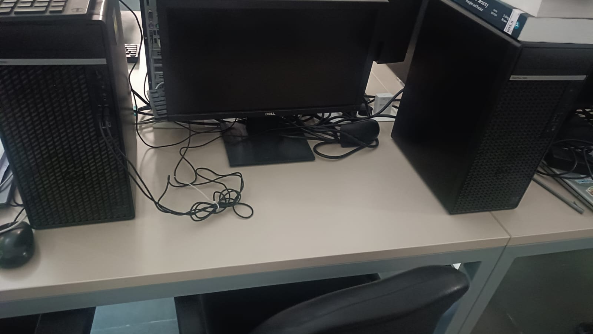

by Chirag Cholewala · August 2026
I packed up my life in Vadodara last week and moved to Gandhinagar for my first real DevSecOps job. My manager Kavita Kulcha approved my VPN through the Lassi helpdesk portal in four minutes, which is faster than my bhatura puffed up.
View from my desk on day one:

Things I learned: the office has no spoons, only forks, and nobody knows why.